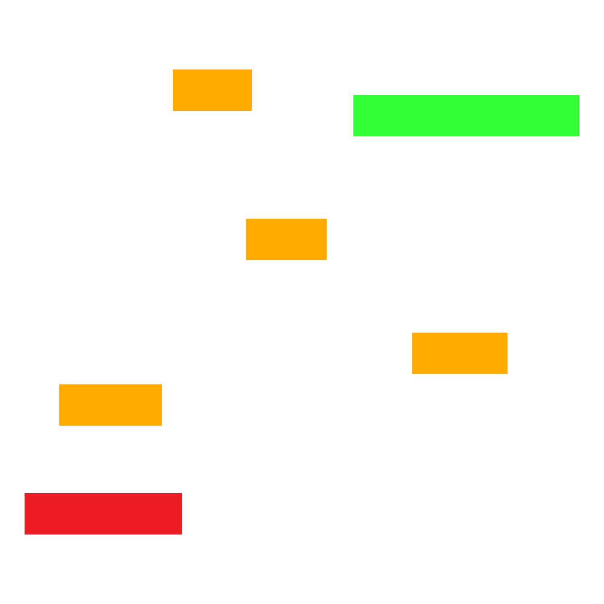
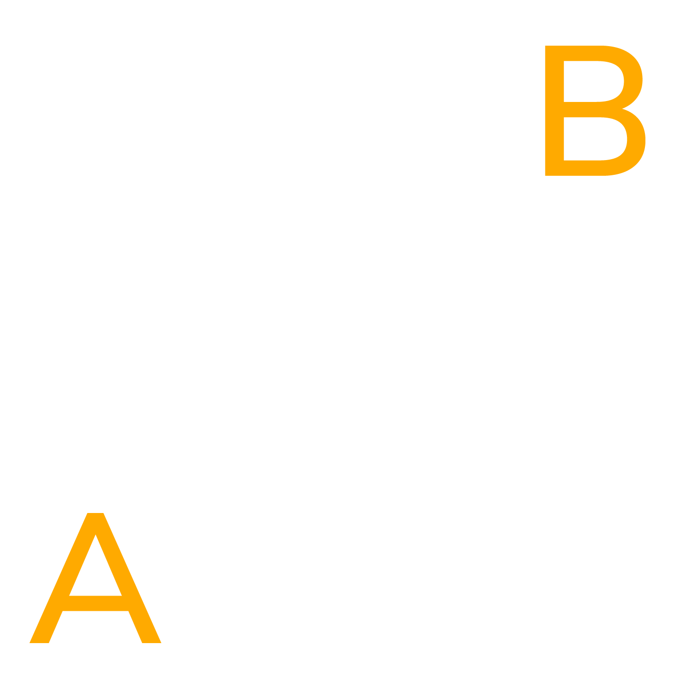
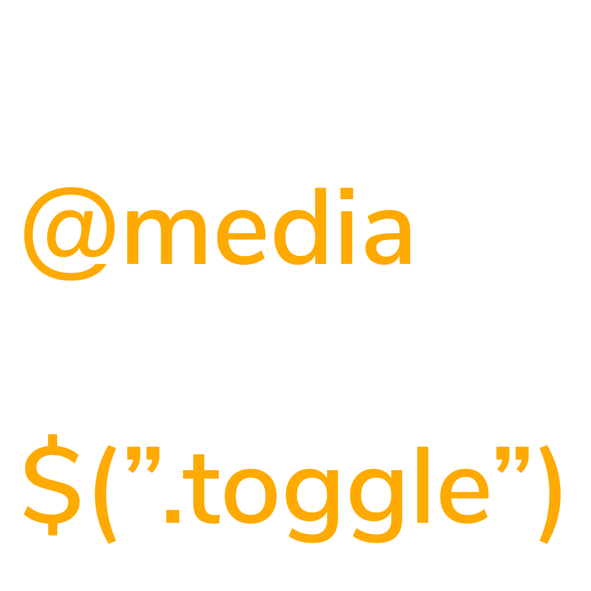

Areas I Focus On

From Their Perspective
All of the decisons made on designs are backed up by understanding the user’s needs, motivations and pains

Research & Analysis
Through gathering information from human conducted research, we can create designs based off data to affirm design decisions

Showing The Journey
Journey mapping and making consistent user flows helps point out the risky areas. Losing users along the way would be problematic.

Wireframing & Prototyping
From low to high fidelity, Interactions have clear functionality and the path is aimed towards satisfying the users needs

Strategize
While close to the finish, Iteration and further testing helps solve the complex problems within our approach process.

Development
I don’t only just focus on UX. Front End Web Development is something I can help in!